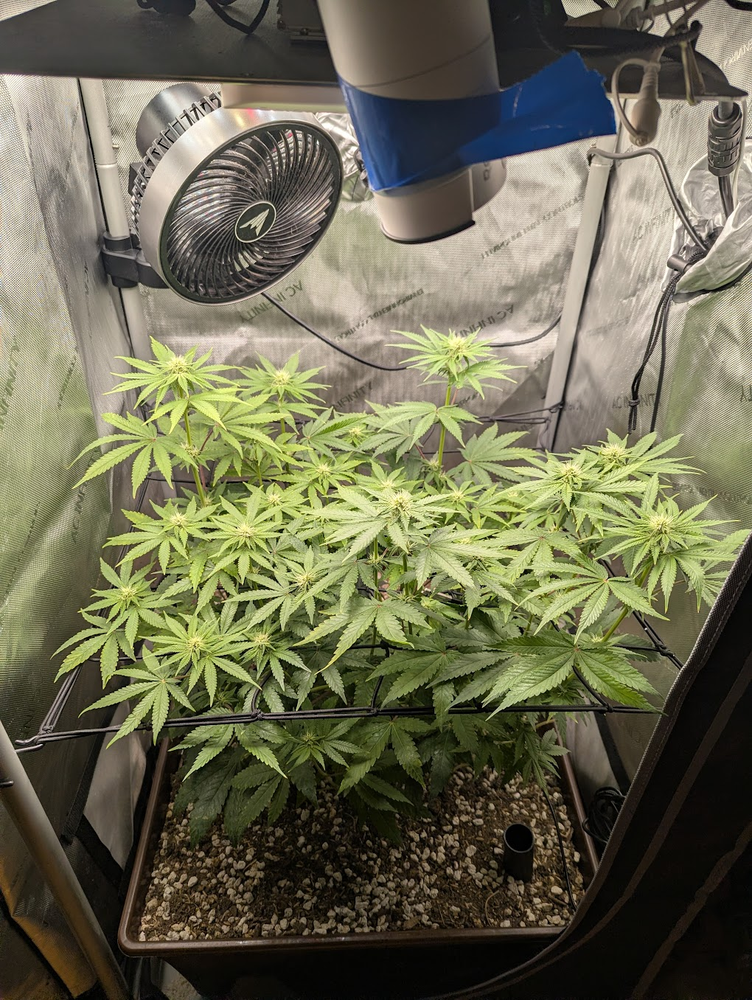
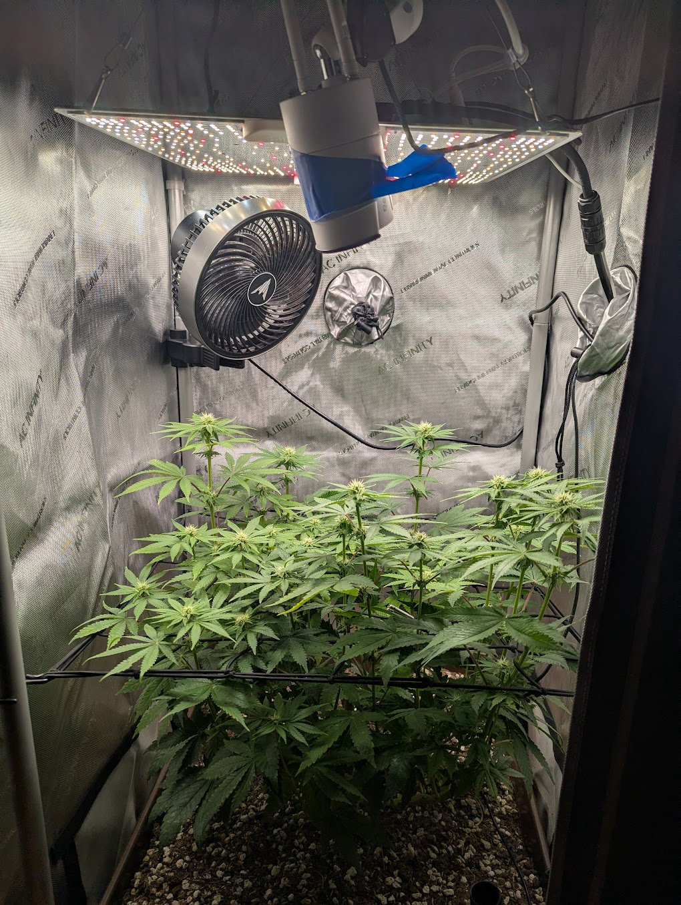
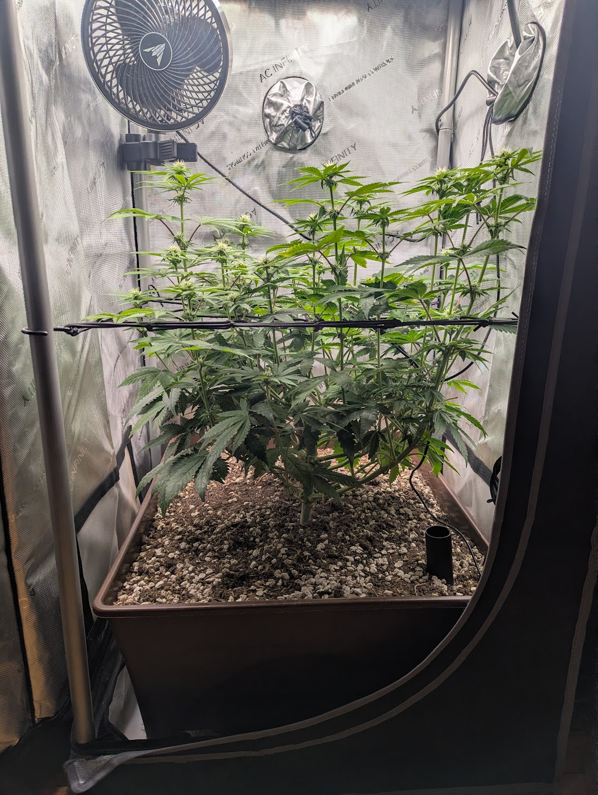
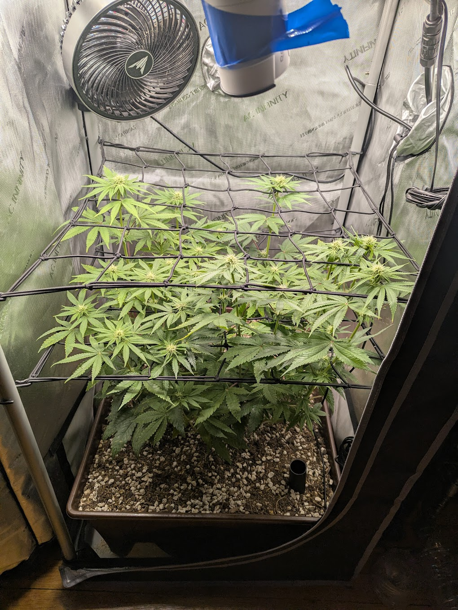
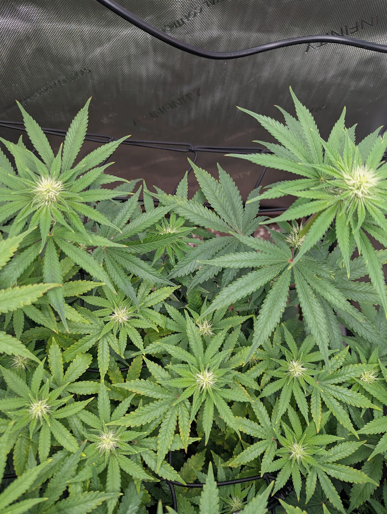
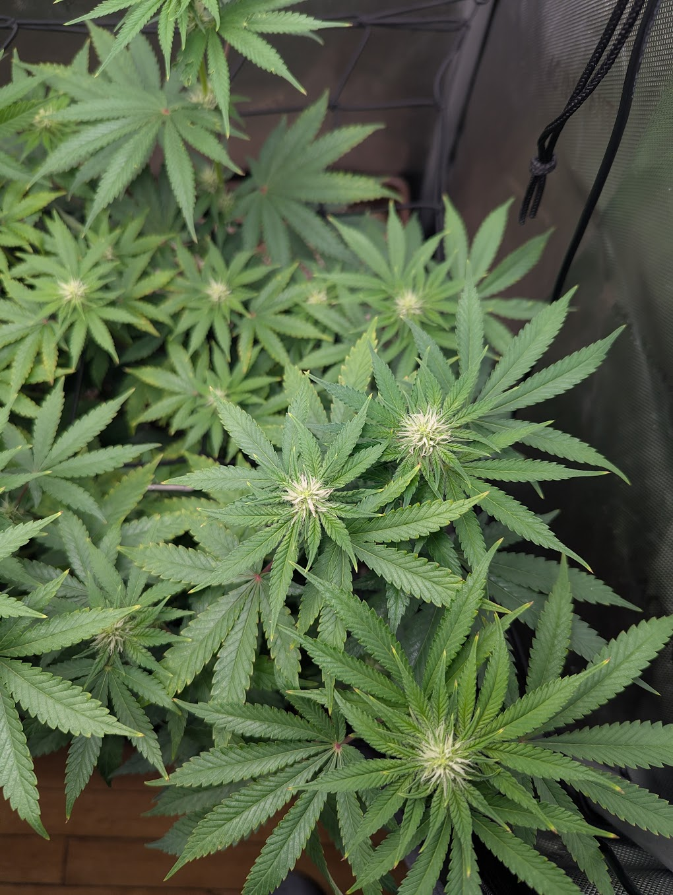
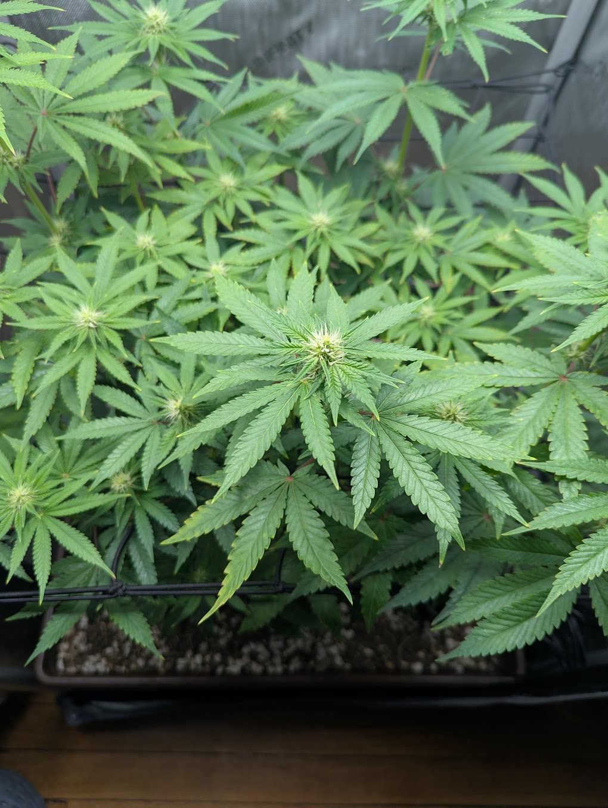
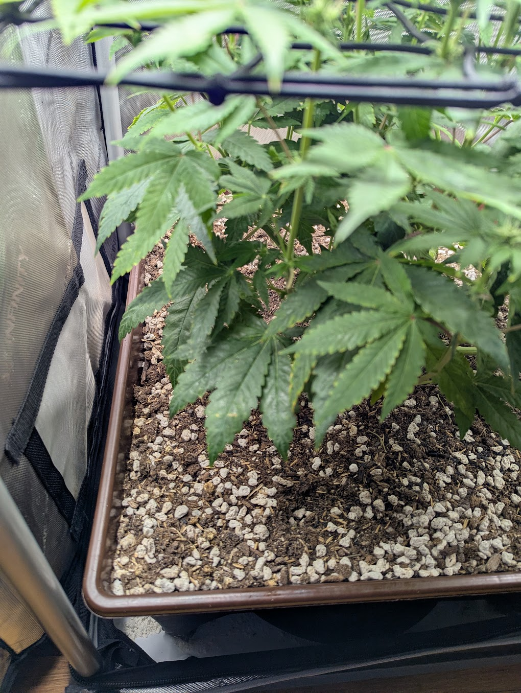

Two days on from 6/22, the plant is getting better, not worse. Pistil count is up and tops are fattening, color stays a uniform deep green, posture is turgid, and the tip burn flagged last time has stopped advancing onto new growth — confirming the 6/22 light correction worked. You raised the fixture again and bumped output 10% (now ~850 PPFD at the tops / ~700 in the center lower plane), installed the second scrog net, and watered 2 gal bottom-fed today. All on plan.
TLDR — Compare today's photos against the 6/22 manual report and tell you whether the plant is doing OK, improving, or declining. Context: PPFD confirmed at ~850 on the top colas (~700 center/lower plane) after you raised the light and pushed output up 10%. Photo order: (1) before any work, (2) canopy after the light change, (3) side profile, (4–10) canopy sweep starting bottom-left and going clockwise, (11) the new second scrog net. Generate the report for review before any commit/push.




| Signal | 6/22 (day ~19) | 6/24 (day ~21) | Trend |
|---|---|---|---|
| Pistils / bud sites | White pistils just emerging at apex sites | More pistils, denser whitening, tops starting to fatten | ↑ better |
| Leaf color | Uniform medium-deep green | Same uniform deep green, no fade | → steady |
| Tip burn (light stress) | Tip-only crisping on highest leaves; light just raised to ~800 | Existing tips unchanged; not spreading to new growth | ↑ resolving |
| Top PPFD | Hot spot ~1050 → raised to ~800 | ~850 at tops / ~700 center after +10% & re-raise | → in range |
| Posture / turgor | Upright, turgid, no droop/claw | Same — turgid, no wilt or clawing | → steady |
| Canopy structure | One net; second net recommended | Second net installed, tops being woven through | ↑ done |
| Pests | ~12 leaves inspected, no mites | No stippling/webbing visible in close-ups | → clear |
This is normal, on-schedule progress for early-to-mid flower. At ~day 21 the apex sites should be moving from "pistils appearing" to "pistils thickening and clusters forming," and that's exactly what the canopy sweep (images 4–10) shows: more white pistils per site than two days ago, with the calyx clusters starting to bulk. Color is a consistent deep green throughout the upper and mid canopy, which means nitrogen is still ample from the 6/20 flowering top-dress.




The tip damage flagged on 6/22 is still visible on the same older upper leaves, but it is not advancing — new growth coming in above the marks is clean. That's the confirmation we were waiting for: it was light-intensity tip burn, and raising the fixture stopped it. Existing burnt tips won't heal (that tissue is spent), so don't read them as a new problem; judge the fix by the fresh tips, which look good.
One thing to keep an eye on: you pushed output up 10% and now read ~850 PPFD at the tops. That's slightly above the ~800 you dialed in on 6/22 and toward the upper end for mid-flower on this plant. It's fine for now — the canopy isn't tacoing or bleaching — but it's the one number that could re-trigger tip burn if it creeps higher. The ~700 in the lower/center plane is a good, productive number for the bud sites under the net.
The red/purple petioles remain a Papaya Crush genetic trait (present since the 6/17 annotation), not a phosphorus issue. No action.
Image 11 shows the second net is in and already organizing a fresh plane of tops — exactly the 6/22 recommendation, done while the stems are still flexible enough to weave. Keep tucking each rising cola through a square over the next several days as the last of the stretch plays out.
Improving and on track. The plant is a vigorous, pest-free Papaya Crush moving cleanly into mid-flower, two days further along than the 6/22 baseline with visibly more flower development. The light correction is confirmed working, the second net is installed, and nothing here needs treatment. The only live items are routine: watch that ~850 PPFD and check soil moisture for today's watering.